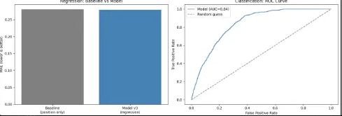

Finding pages that rank well but under-capture clicks — and turning that gap into a ranked, evidence-backed action list.
Search visibility (impressions, ranking position) and search performance (clicks) don't always move together. A page ranking on page one with an unusually low CTR represents wasted opportunity — the hard part, ranking, is already solved, but the click isn't converting. Manually auditing thousands of pages for this pattern doesn't scale.
This project supports one concrete decision: which pages should a content team review first, and why — replacing manual spreadsheet triage with a ranked, explainable shortlist.
Source: the FlyRank ML Internship anonymized search dataset — 30,000 pages, 44 columns, covering search performance, content characteristics, and 90-day traffic behavior. No client names, domains, URLs, or credentials appear anywhere in this analysis.
Pages with fewer than 50 impressions over 90 days were excluded — 6,479 rows (21.6%). Below this threshold, CTR values were statistically unreliable: a page with 1 impression and 1 click registers a 100% CTR, which is noise, not signal. After filtering, the maximum CTR dropped from 100% to a plausible 12%, and the dataset retained 23,521 pages.
Columns under 5% missingness were median or mode imputed directly. word_count and char_count (~30% missing) were imputed with an accompanying _was_missing flag — this later revealed that pages with missing word counts had 38% lower average CTR, a real pattern worth preserving rather than erasing. provider_used (72% missing) was dropped entirely.
Expected CTR is computed as the mean CTR within each position tier (top_3, page_1, striking, page_3_5, deep). The gap between expected and actual CTR is the opportunity signal: a positive gap means a page is underperforming its position.
class_weight="balanced" to handle the resulting imbalance (5,124 opportunity vs. 18,397 non-opportunity pages).clicks_90d, pageviews_90d, sessions_90d, and users_90d were explicitly excluded from features — each is directly derived from or definitionally tied to CTR, and including them would leak the target into the inputs.
A grouped train/test split by client_id (80/20) ensured no client's pages appeared in both sets — verified post-split with zero client overlap. A random split was avoided because pages from the same client can share systematic patterns that would otherwise leak across train and test.
XGBoost was also tested and underperformed the position-only baseline (MAE 0.2821, −0.5%) — additional model complexity did not help. This is a meaningful finding: position-tier alone accounts for nearly all predictable CTR variance available in this dataset.
Threshold sensitivity analysis confirmed the top-20% opportunity threshold as near-optimal — AUC plateaued between the top 15–20% cutoffs, with no further gain from tightening it. High recall, moderate precision is the right trade-off for a triage tool: missing a real opportunity is costlier than a human reviewer spending a few extra minutes on a false positive.

Position tier and 90-day impressions dominate feature importance (45% combined), followed by engagement rate and scroll rate. Content length — word and character count — contributed minimally (under 2% each): raw content volume does not predict CTR opportunity in this dataset.
An initial pass flagged 432 already-high-CTR pages (CTR ≥ 0.5) as "opportunities," caused by an inflated position-tier expectation for a subset of pages. A post-hoc CTR sanity filter removed these before the list was finalized.
Pages are ranked by opportunity score (classifier probability), filtered to exclude already-high-CTR false positives, and tagged with a reason code:
| Priority | Reason code | Recommended action |
|---|---|---|
| High | Good position, CTR near zero | Rewrite title / meta description |
| Medium | High visibility, low engagement | Content quality / relevance review |
| Medium | Weak position | SEO / ranking work before CTR optimization |
| Monitor | Within expected range | No action — periodic re-check only |
The full ranked list of 20+ pages, with individual scores and reason codes, is in the capstone notebook linked below.